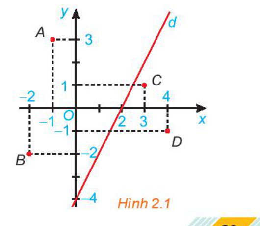
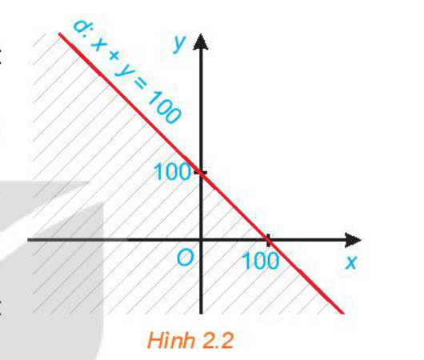
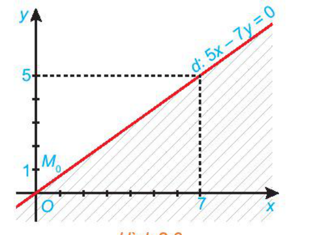
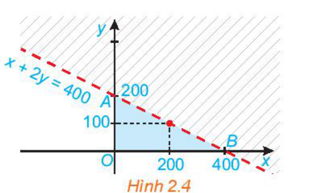
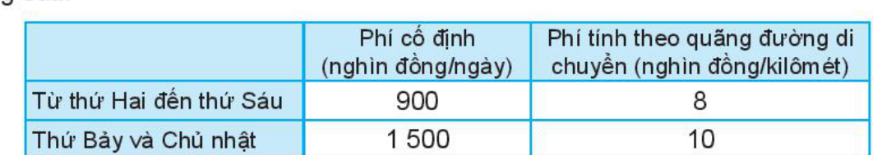

Nhân ngày Quốc tế Thiếu nhi 1-6, một rạp chiếu phim phục vụ các khán giả một bộ phim hoạt hình. Vé được bán ra có hai loại:
- Loại 1 (dành cho trẻ từ 6–13 tuổi): $50\,000$ đồng/vé;
- Loại 2 (dành cho người trên 13 tuổi): $100\,000$ đồng/vé.
Người ta tính toán rằng, để không phải bù lỗ thì số tiền vé thu được ở rạp chiếu phim này phải đạt tối thiểu $20$ triệu đồng.
❓ Hỏi số lượng vé bán được trong những trường hợp nào thì rạp chiếu phim phải bù lỗ?
Khán phòng rạp chiếu phim phục vụ khán giả nhí ngày 1-6
Trong tình huống mở đầu, gọi $x$ là số vé loại 1 bán được và $y$ là số vé loại 2 bán được ($x, y \in \mathbb{N}$).
Viết biểu thức tính số tiền bán vé thu được (đơn vị nghìn đồng) ở rạp chiếu phim đó theo $x$ và $y$.
a) Các số nguyên không âm $x$ và $y$ phải thoả mãn điều kiện gì để số tiền bán vé thu được đạt tối thiểu 20 triệu đồng?
b) Nếu số tiền bán vé thu được nhỏ hơn 20 triệu đồng thì $x$ và $y$ thoả mãn điều kiện gì?
Hướng dẫn:
• Số tiền vé loại 1 thu được: $50x$ (nghìn đồng).
• Số tiền vé loại 2 thu được: $100y$ (nghìn đồng).
• Tổng số tiền bán vé thu được: $50x + 100y$ (nghìn đồng).
a) Đổi $20\text{ triệu đồng} = 20\,000\text{ nghìn đồng}$. Đạt tối thiểu 20 triệu nghĩa là: $50x + 100y \ge 20\,000$ (hay $x + 2y \ge 400$).
b) Nhỏ hơn 20 triệu đồng nghĩa là rạp bị bù lỗ: $50x + 100y < 20\,000$ (hay $x + 2y < 400$).
Mỗi hệ thức liên hệ giữa $x$ và $y$ thu được trong HĐ1a và HĐ1b được gọi là một bất phương trình bậc nhất hai ẩn.
📌 ĐỊNH NGHĨA BẤT PHƯƠNG TRÌNH BẬC NHẤT HAI ẨN
Bất phương trình bậc nhất hai ẩn $x, y$ có dạng tổng quát là:
$$ax + by \le c \quad (ax + by \ge c, \ ax + by < c, \ ax + by > c)$$
trong đó $a, b, c$ là những số thực đã cho, $a$ và $b$ không đồng thời bằng 0 ($a^2 + b^2 \ne 0$), $x$ và $y$ là các ẩn số.
Bất phương trình nào sau đây là bất phương trình bậc nhất hai ẩn?
$$2x + 3y < 1; \qquad 2x^2 + 3y < 1.$$
Giải:
• Bất phương trình $2x + 3y < 1$ là bất phương trình bậc nhất hai ẩn vì ẩn $x$ và $y$ đều có bậc 1 và hệ số $a=2, b=3$ không đồng thời bằng 0.
• Bất phương trình $2x^2 + 3y < 1$ không phải là bất phương trình bậc nhất hai ẩn vì có chứa $x^2$ (bậc 2).
Cặp số $(x; y) = (100; 100)$ thoả mãn bất phương trình bậc nhất hai ẩn nào trong hai bất phương trình thu được ở HĐ1? Từ đó cho biết rạp chiếu phim có phải bù lỗ hay không nếu bán được 100 vé loại 1 và 100 vé loại 2.
Trả lời câu hỏi tương tự với cặp số $(x; y) = (150; 150)$.
Hướng dẫn:
• Với $(x; y) = (100; 100)$: $50(100) + 100(100) = 15\,000 < 20\,000$. Thỏa mãn BPT bù lỗ $50x + 100y < 20\,000$. Rạp chiếu phim
phải bù lỗ.
• Với $(x; y) = (150; 150)$: $50(150) + 100(150) = 22\,500 > 20\,000$. Thỏa mãn BPT $50x + 100y \ge 20\,000$. Rạp chiếu phim
không phải bù lỗ (có lãi).
🔑 NGHIỆM CỦA BẤT PHƯƠNG TRÌNH BẬC NHẤT HAI ẨN
Cặp số $(x_0; y_0)$ được gọi là một nghiệm của bất phương trình bậc nhất hai ẩn $ax + by \le c$ nếu bất đẳng thức $ax_0 + by_0 \le c$ đúng.
Cho bất phương trình bậc nhất hai ẩn $x + 2y > 5$. Cặp số nào sau đây là một nghiệm của bất phương trình bậc nhất hai ẩn trên?
a) $(x; y) = (3; 4)$; b) $(x; y) = (0; -1)$.
Giải:
a) Vì $3 + 2 \cdot 4 = 11 > 5$ nên cặp số $(3; 4)$ là một nghiệm của bất phương trình đã cho.
b) Vì $0 + 2 \cdot (-1) = -2 < 5$ nên cặp số $(0; -1)$ không phải là một nghiệm của bất phương trình đã cho.
Cho bất phương trình bậc nhất hai ẩn $x + 2y \ge 0$.
a) Hãy chỉ ra ít nhất hai nghiệm của bất phương trình trên.
b) Với $y = 0$, có bao nhiêu giá trị của $x$ thoả mãn bất phương trình đã cho?
Lời giải:
a) Chọn $(x; y) = (0; 0)$, ta có $0 + 2 \cdot 0 = 0 \ge 0$ (đúng); Chọn $(x; y) = (1; 1)$, ta có $1 + 2 \cdot 1 = 3 \ge 0$ (đúng). Vậy $(0; 0)$ và $(1; 1)$ là hai nghiệm của bất phương trình.
b) Khi $y = 0$, bất phương trình trở thành $x + 2 \cdot 0 \ge 0 \Leftrightarrow x \ge 0$. Có vô số giá trị thực của $x$ không âm thỏa mãn ($x \in [0; +\infty)$).
💡 Nhận xét quan trọng: Bất phương trình bậc nhất hai ẩn luôn có vô số nghiệm.
Cho đường thẳng $d: 2x - y = 4$ trên mặt phẳng toạ độ $Oxy$ (H.2.1). Đường thẳng này chia mặt phẳng thành hai nửa mặt phẳng.
a) Các điểm $O(0; 0), A(-1; 3)$ và $B(-2; -2)$ có thuộc cùng một nửa mặt phẳng bờ là đường thẳng $d$ không?
Tính giá trị của biểu thức $2x - y$ tại các điểm đó và so sánh với 4.
b) Trả lời câu hỏi tương tự như câu a với các điểm $C(3; 1), D(4; -1)$.

Hình 2.1: Đường thẳng $d: 2x - y = 4$ chia mặt phẳng tọa độ thành hai miền
Hướng dẫn:
a) Các điểm $O, A, B$ cùng thuộc nửa mặt phẳng bên trái (phía trên) đường thẳng $d$.
• Tại $O(0; 0)$: $2(0) - 0 = 0 < 4$.
• Tại $A(-1; 3)$: $2(-1) - 3 = -5 < 4$.
• Tại $B(-2; -2)$: $2(-2) - (-2) = -2 < 4$.
Giá trị biểu thức $2x - y$ tại cả ba điểm đều nhỏ hơn 4.
b) Các điểm $C(3; 1)$ và $D(4; -1)$ cùng thuộc nửa mặt phẳng bên phải (phía dưới) đường thẳng $d$.
• Tại $C(3; 1)$: $2(3) - 1 = 5 > 4$.
• Tại $D(4; -1)$: $2(4) - (-1) = 9 > 4$.
Giá trị biểu thức $2x - y$ tại cả hai điểm đều lớn hơn 4.
📐 MIỀN NGHIỆM VÀ NỬA MẶT PHẲNG BỜ d
• Trong mặt phẳng toạ độ $Oxy$, tập hợp các điểm có toạ độ là nghiệm của bất phương trình $ax + by \le c$ được gọi là miền nghiệm của bất phương trình đó.
• Người ta chứng minh được rằng đường thẳng $d: ax + by = c$ chia mặt phẳng toạ độ $Oxy$ thành hai nửa mặt phẳng bờ $d$:
- Một nửa mặt phẳng (không kể bờ $d$) gồm các điểm $(x; y)$ thoả mãn $ax + by > c$;
- Nửa mặt phẳng còn lại (không kể bờ $d$) gồm các điểm $(x; y)$ thoả mãn $ax + by < c$.
• Bờ $d$ gồm các điểm $(x; y)$ thoả mãn $ax + by = c$.
Biểu diễn miền nghiệm của bất phương trình $x + y \ge 100$ trên mặt phẳng toạ độ.
Giải (H.2.2):
Ta biểu diễn miền nghiệm của bất phương trình bậc nhất hai ẩn $x + y \ge 100$ như sau:
Bước 1. Vẽ đường thẳng $d: x + y = 100$ trên mặt phẳng toạ độ $Oxy$ (đi qua điểm $(100; 0)$ và $(0; 100)$).
Bước 2. Lấy một điểm bất kì không thuộc $d$ trên mặt phẳng rồi thay vào biểu thức $x + y$. Chẳng hạn, lấy $O(0; 0)$, ta có: $0 + 0 = 0 < 100$.
Do đó miền nghiệm của bất phương trình đã cho là nửa mặt phẳng bờ $d$ không chứa gốc toạ độ (miền không bị gạch chéo, kể cả bờ $d$).

= 100" />
Hình 2.2: Miền nghiệm của bất phương trình $x + y \ge 100$
🌟 QUY TRÌNH 3 BƯỚC BIỂU DIỄN MIỀN NGHIỆM ax + by ≤ c
- Bước 1: Vẽ đường thẳng bờ $d$: Vẽ đường thẳng $d: ax + by = c$ trên mặt phẳng toạ độ $Oxy$.
- Bước 2: Lấy điểm thử $M_0$: Lấy một điểm $M_0(x_0; y_0)$ không thuộc $d$. Tính giá trị $ax_0 + by_0$ và so sánh với $c$.
- Bước 3: Kết luận miền nghiệm:
- Nếu $ax_0 + by_0 < c$ thì nửa mặt phẳng bờ $d$ chứa $M_0$ là miền nghiệm.
- Nếu $ax_0 + by_0 > c$ thì nửa mặt phẳng bờ $d$ không chứa $M_0$ là miền nghiệm.
Mẹo chọn điểm kiểm tra $M_0$:
• Nếu $c \ne 0$, ta luôn ưu tiên chọn $M_0$ chính là gốc toạ độ $O(0; 0)$ vì tính toán nhanh nhất!
• Nếu $c = 0$ (đường thẳng đi qua gốc $O$), ta chọn $M_0$ là $(1; 0)$ hoặc $(0; 1)$.
Biểu diễn miền nghiệm của bất phương trình $5x - 7y \le 0$ trên mặt phẳng toạ độ.
Giải (H.2.3):
Bước 1. Vẽ đường thẳng $d: 5x - 7y = 0$ trên mặt phẳng toạ độ $Oxy$ (đi qua gốc toạ độ $O(0; 0)$ và điểm $(7; 5)$).
Bước 2. Vì $d$ đi qua gốc toạ độ nên ta chọn điểm $M_0(0; 1)$ không thuộc $d$. Thay $x = 0, y = 1$ vào biểu thức $5x - 7y$ ta được:
$$5 \cdot 0 - 7 \cdot 1 = -7 < 0.$$
Do đó miền nghiệm của bất phương trình là nửa mặt phẳng bờ $d$ chứa điểm $M_0$ (miền không bị gạch, kể cả bờ $d$).

Hình 2.3: Miền nghiệm của bất phương trình $5x - 7y \le 0$
⚠️ Chú ý về nét vẽ đường thẳng biên:
• Đối với bất phương trình có dấu bằng ($\le, \ge$): Đường biên $d$ được vẽ bằng nét liền (miền nghiệm bao gồm cả đường biên).
• Đối với bất phương trình ngặt ($<, >$): Đường biên $d$ được vẽ bằng nét đứt (miền nghiệm bỏ đi đường biên).
Biểu diễn miền nghiệm của bất phương trình $2x + y < 200$ trên mặt phẳng toạ độ.
Lời giải:
Bước 1. Vẽ đường thẳng $d: 2x + y = 200$ bằng
nét đứt (đi qua $(100; 0)$ và $(0; 200)$).
Bước 2. Thay toạ độ gốc $O(0; 0)$ vào biểu thức: $2(0) + 0 = 0 < 200$ (thỏa mãn).
Bước 3. Kết luận: Miền nghiệm của bất phương trình là nửa mặt phẳng bờ $d$ chứa gốc toạ độ $O(0; 0)$, không kể bờ $d$.
Gọi $x$ là số lượng vé loại 1 bán được ($x \in \mathbb{N}$) và $y$ là số lượng vé loại 2 bán được ($y \in \mathbb{N}$) thì số tiền bán vé thu được là $50x + 100y$ (nghìn đồng).
Người ta sẽ phải bù lỗ trong trường hợp số tiền bán vé nhỏ hơn 20 triệu đồng, tức là:
$$50x + 100y < 20\,000 \quad \Leftrightarrow \quad x + 2y < 400.$$
Như vậy, việc giải quyết bài toán mở đầu dẫn đến việc đi tìm miền nghiệm của bất phương trình $x + 2y < 400$ trên miền $x \ge 0, y \ge 0$.
Xác định miền nghiệm:
• Vẽ đường thẳng $d: x + 2y = 400$ (nét đứt) cắt trục hoành tại $B(400; 0)$ và cắt trục tung tại $A(0; 200)$.
• Lấy gốc $O(0; 0)$: $0 + 2 \cdot 0 = 0 < 400$. Nửa mặt phẳng chứa gốc $O$ là miền nghiệm.
• Kết hợp điều kiện $x \ge 0, y \ge 0$, miền nghiệm biểu diễn các trường hợp rạp chiếu phim phải bù lỗ là
phần trong của tam giác $OAB$ (không kể các điểm trên cạnh $AB$).

Hình 2.4: Miền bù lỗ là miền tam giác OAB (không kể đoạn thẳng AB)
Nhận xét từ đồ thị:
• Nếu bán được 150 vé loại 1 và 150 vé loại 2 $\to (150; 150)$ nằm ngoài tam giác $OAB$: Rạp có lãi.
• Nếu bán được 200 vé loại 1 và 100 vé loại 2 $\to (200; 100)$ nằm trên cạnh $AB$: Rạp hoà vốn.
• Nếu bán được 100 vé loại 1 và 100 vé loại 2 $\to (100; 100)$ nằm trong miền tam giác $OAB$: Rạp bị bù lỗ.
Một công ty viễn thông tính phí 1 nghìn đồng mỗi phút gọi nội mạng và 2 nghìn đồng mỗi phút gọi ngoại mạng. Em có thể sử dụng bao nhiêu phút gọi nội mạng và bao nhiêu phút gọi ngoại mạng trong một tháng nếu em muốn số tiền phải trả ít hơn 200 nghìn đồng?
Lời giải:
Gọi $x$ và $y$ lần lượt là số phút gọi nội mạng và ngoại mạng trong một tháng ($x \ge 0, y \ge 0$).
• Tiền cước gọi nội mạng: $1 \cdot x = x$ (nghìn đồng).
• Tiền cước gọi ngoại mạng: $2 \cdot y = 2y$ (nghìn đồng).
Tổng số tiền phải trả ít hơn 200 nghìn đồng nên ta có bất phương trình:
$$x + 2y < 200 \quad (x \ge 0, \ y \ge 0).$$
Vậy số phút gọi nội mạng $x$ và ngoại mạng $y$ có thể sử dụng là toạ độ của mọi điểm $(x; y)$ nguyên không âm nằm trong miền tam giác giới hạn bởi gốc toạ độ $O(0; 0)$, điểm $(200; 0)$ trên trục $Ox$ và $(0; 100)$ trên trục $Oy$ (không kể cạnh huyền).
Bài 2.1 (SGK trang 25)
Bất phương trình nào sau đây là bất phương trình bậc nhất hai ẩn?
a) $2x + 3y > 6$;
b) $2^2 x + y \le 0$;
c) $2x^2 - y \ge 1$.
Xem lời giải chi tiết
• a) $2x + 3y > 6$ là bất phương trình bậc nhất hai ẩn vì có dạng $ax + by > c$ với $a = 2 \ne 0, b = 3 \ne 0$ và bậc của $x, y$ đều là 1.
• b) $2^2 x + y \le 0 \Leftrightarrow 4x + y \le 0$ là bất phương trình bậc nhất hai ẩn vì $2^2 = 4$ chỉ là hằng số, các ẩn $x$ và $y$ đều có bậc 1.
• c) $2x^2 - y \ge 1$ không phải là bất phương trình bậc nhất hai ẩn vì ẩn $x$ có bậc 2 ($x^2$).
Bài 2.2 (SGK trang 25)
Biểu diễn miền nghiệm của mỗi bất phương trình sau trên mặt phẳng toạ độ:
a) $3x + 2y \ge 300$;
b) $7x + 20y < 0$.
Xem lời giải chi tiết
a) Biểu diễn miền nghiệm $3x + 2y \ge 300$:
• Bước 1: Vẽ đường thẳng $d_1: 3x + 2y = 300$ bằng nét liền (đi qua $A(100; 0)$ và $B(0; 150)$).
• Bước 2: Thay toạ độ $O(0; 0)$ vào vế trái: $3(0) + 2(0) = 0 < 300$ (không thoả mãn).
• Bước 3: Miền nghiệm là nửa mặt phẳng bờ $d_1$ không chứa gốc toạ độ $O(0; 0)$, kể cả bờ $d_1$.
b) Biểu diễn miền nghiệm $7x + 20y < 0$:
• Bước 1: Vẽ đường thẳng $d_2: 7x + 20y = 0$ bằng nét đứt (đi qua gốc toạ độ $O(0; 0)$ và điểm $M(20; -7)$).
• Bước 2: Vì $d_2$ đi qua $O$, chọn điểm thử $N(0; 1)$: thay vào biểu thức ta được $7(0) + 20(1) = 20 > 0$ (không thoả mãn).
• Bước 3: Miền nghiệm là nửa mặt phẳng bờ $d_2$ không chứa điểm $N(0; 1)$, không kể bờ $d_2$.
Bài 2.3 (SGK trang 25) - Bài toán thực tế thuê xe ô tô
Ông An muốn thuê một chiếc ô tô (có lái xe) trong một tuần. Giá thuê xe được cho như bảng sau:

Bảng giá cước thuê xe ô tô theo ngày và kilômét di chuyển
a) Gọi $x$ và $y$ lần lượt là số kilômét ông An đi trong các ngày từ thứ Hai đến thứ Sáu và trong hai ngày cuối tuần. Viết bất phương trình biểu thị mối liên hệ giữa $x$ và $y$ sao cho tổng số tiền ông An phải trả không quá 14 triệu đồng.
b) Biểu diễn miền nghiệm của bất phương trình ở câu a trên mặt phẳng toạ độ.
Xem lời giải chi tiết
a) Thiết lập bất phương trình:
• Từ thứ Hai đến thứ Sáu có 5 ngày. Phí cố định: $5 \times 900 = 4\,500$ (nghìn đồng).
• Phí di chuyển các ngày thường ($x$ km): $8x$ (nghìn đồng).
• Thứ Bảy và Chủ nhật có 2 ngày cuối tuần. Phí cố định: $2 \times 1\,500 = 3\,000$ (nghìn đồng).
• Phí di chuyển cuối tuần ($y$ km): $10y$ (nghìn đồng).
Tổng số tiền ông An phải trả:
$$T = (4\,500 + 8x) + (3\,000 + 10y) = 7\,500 + 8x + 10y \text{ (nghìn đồng)}.$$
Đổi 14 triệu đồng $= 14\,000$ nghìn đồng. Do tổng số tiền không quá 14 triệu đồng:
$$7\,500 + 8x + 10y \le 14\,000 \quad \Leftrightarrow \quad 8x + 10y \le 6\,500 \quad \Leftrightarrow \quad 4x + 5y \le 3\,250 \quad (x \ge 0, y \ge 0).$$
b) Biểu diễn miền nghiệm:
• Bước 1: Vẽ đường thẳng $d: 4x + 5y = 3\,250$ (đi qua điểm $(812.5; 0)$ và $(0; 650)$).
• Bước 2: Thay $O(0; 0)$ vào biểu thức: $4(0) + 5(0) = 0 \le 3\,250$ (thoả mãn).
• Bước 3: Do $x \ge 0, y \ge 0$, miền nghiệm của bất phương trình là miền tam giác giới hạn bởi ba đỉnh: gốc toạ độ $O(0; 0)$, điểm $A(812.5; 0)$ trên $Ox$, và điểm $B(0; 650)$ trên $Oy$, kể cả các cạnh của tam giác $OAB$.